Zenith GP / Titan’s Rest / Phase 1 · Step 2
Standing Titan — refinement review
Review the fuller limbs, larger hands, rounded shoulder armour and forward head before Phase 2. All body joint positions remain fixed; finger knuckles follow the approved larger hands. All 11 comparisons place the model sheet on the left and the refined Blender model on the right. Open any image to inspect it at full resolution.
01 · Standing proportions
Four orthographic views at G1’s page height. Reference pixels keep their original vertical coordinates; body renders are shown at their native 512 × 1024 size.
Front
Native G1 page scale · crown ≈ 201 / soles 918
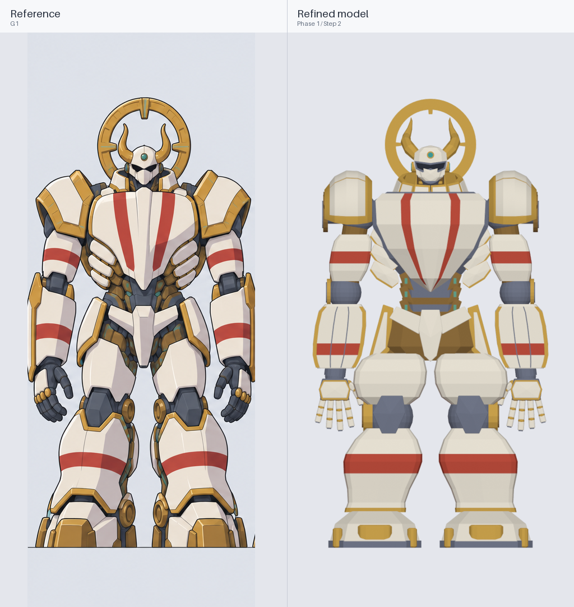


Three-quarter
Native G1 page scale · crown ≈ 201 / soles 918
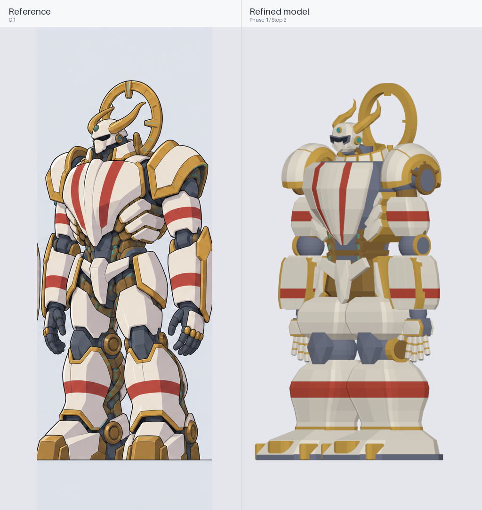


Side
Native G1 page scale · crown ≈ 201 / soles 918
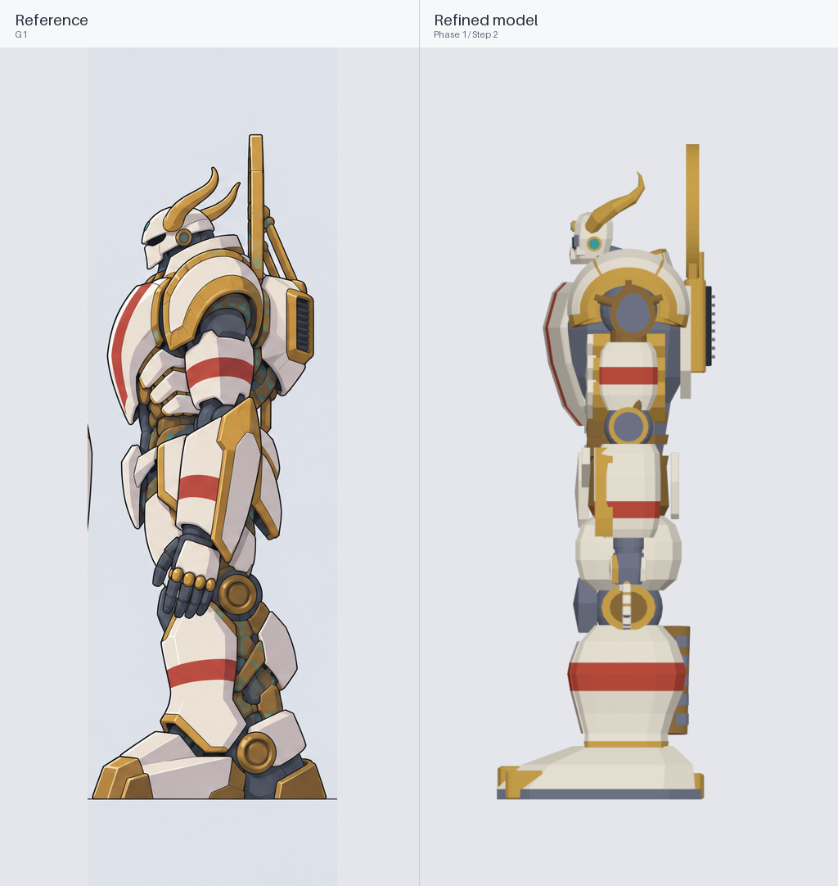


Back
Native G1 page scale · crown ≈ 201 / soles 918
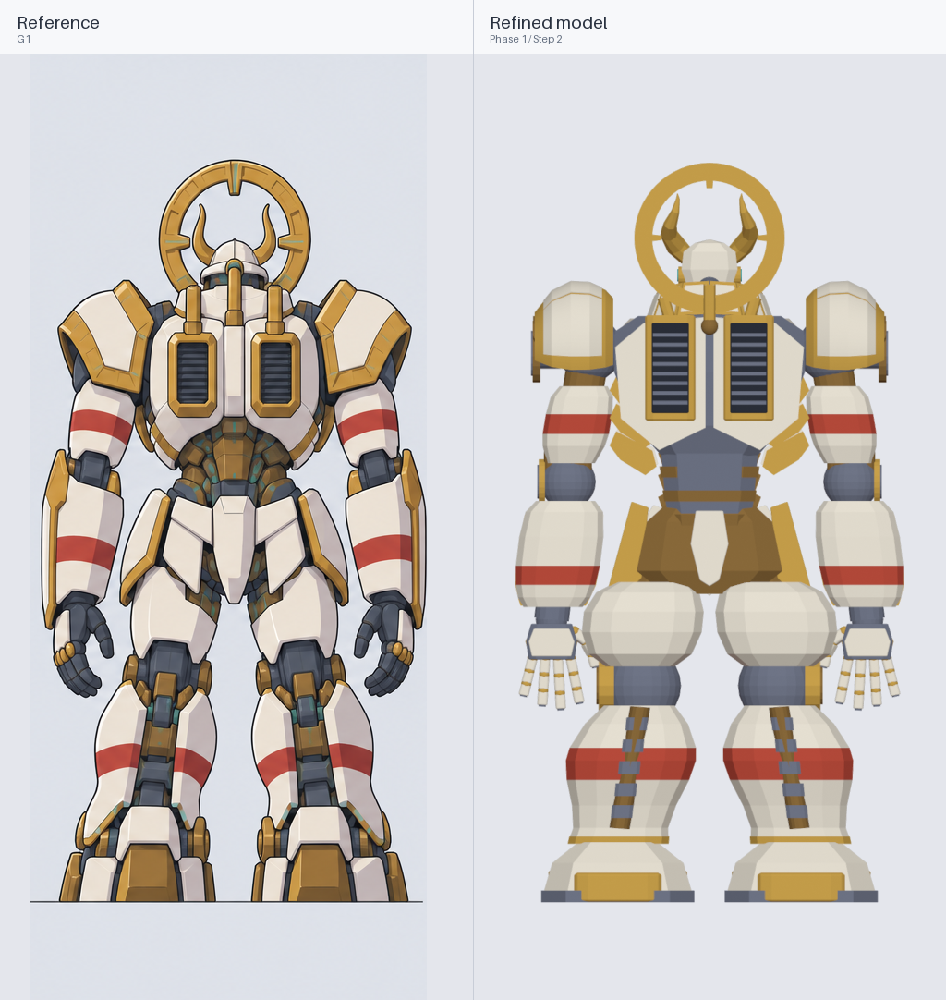


02 · Head, collar and halo
Complete G2 cells preserve the horns, collar and halo supports. The mounted halo follows G1; its close-up is isolated for shape review.
Head and collar · front
Whole reference view and whole render · proportions preserved
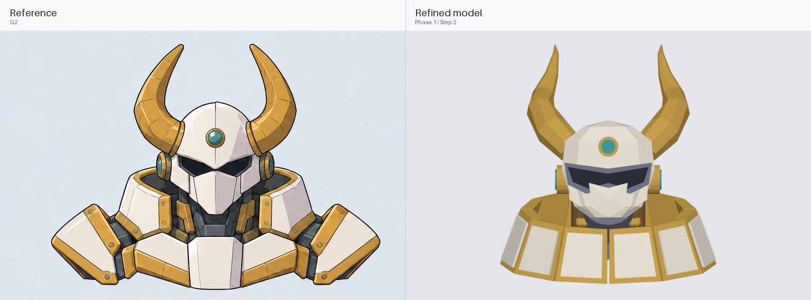


Head and collar · side
Whole reference view and whole render · proportions preserved
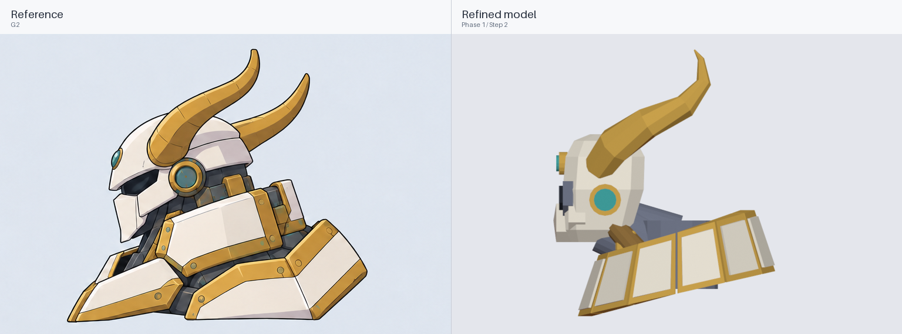


Head and collar · above
Whole reference view and whole render · proportions preserved
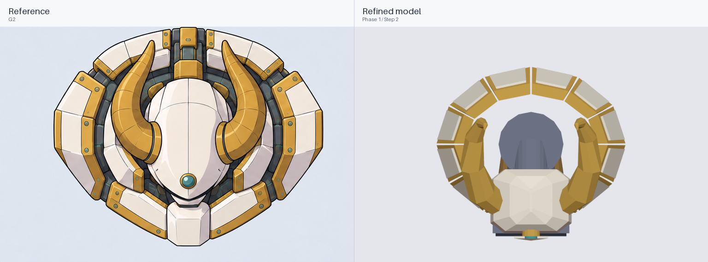


Halo · face-on
Whole reference view and whole render · proportions preserved
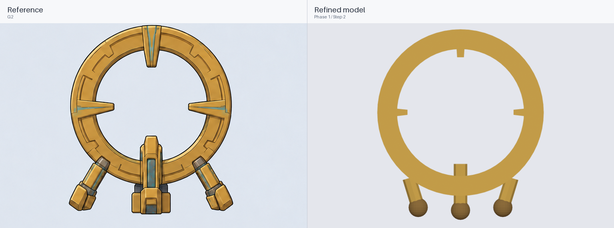


03 · Arm and sword
G3’s palm-up hand supplies finger construction; G1 sets the revised 180 m hand length and 100 m palm width. Both sword reference crops keep identical horizontal bounds and scale.
Right arm · palm up
Whole reference view and whole render · proportions preserved
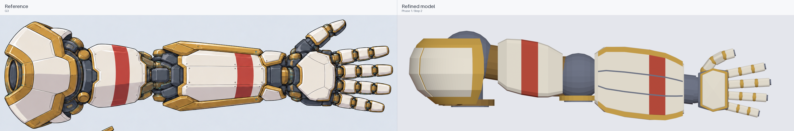


Sword · flat
Whole reference view and whole render · proportions preserved
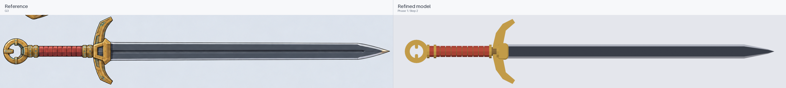


Sword · edge-on
Whole reference view and whole render · proportions preserved
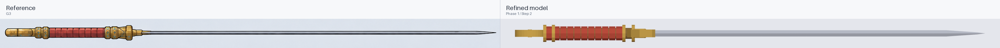


04 · Rig range checks
Shoulders 90°, elbows 120°, knees 60°, wrists 45° and all finger knuckles 90°. The internal frame stays connected; armour collision clearance is not certified by this check.
Extreme pose · front
Frame contact check only; production file remains standing.
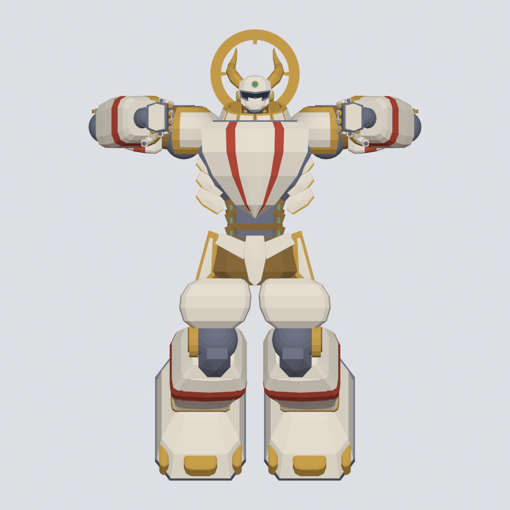
Extreme pose · side
Frame contact check only; production file remains standing.
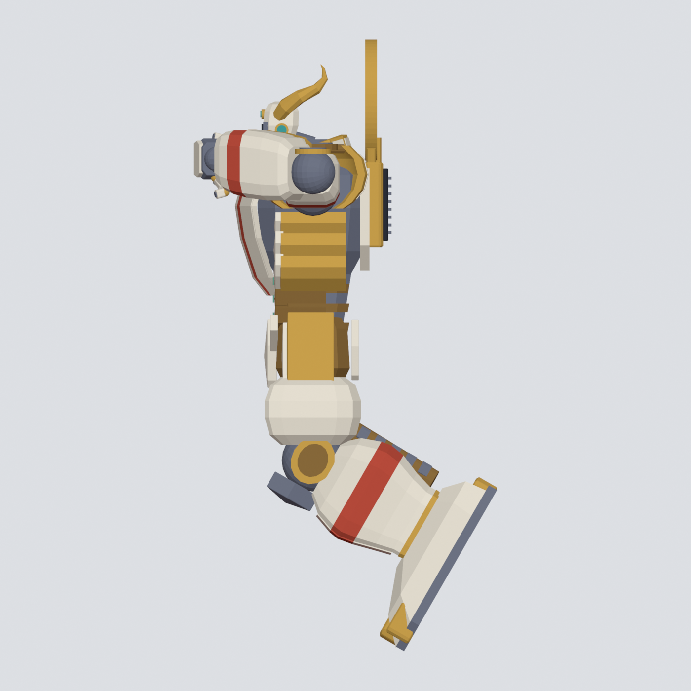
Source files and measurements
- Production scene
- Phase 1 GLB
- Joint positions
- Step 1 joint baseline
- Measurements and triangle counts
- Independent validation
- Pose/contact validation
- Brief and production notes
- Crop and assembly record
- Camera framing record
- assemble_titan_previews.py
- build_titan.py
- export_titan.py
- pose_titan.py
- refine_titan.py
- render_titan.py
- validate_titan.py
- G1 source sheet
- G2 source sheet
- G3 source sheet